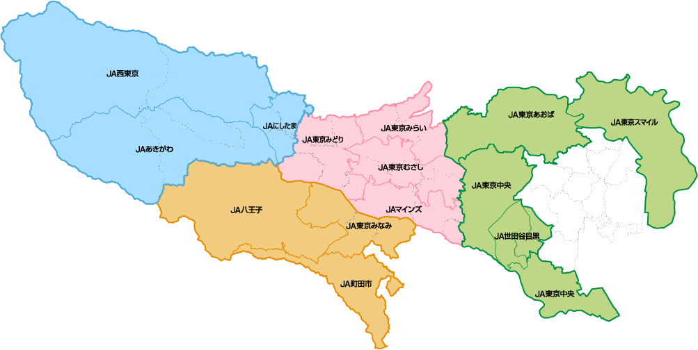
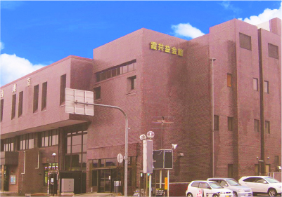
西東京農業協同組合
青梅市／奥多摩市
西多摩農業協同組合
福生市／羽村市／瑞穂町
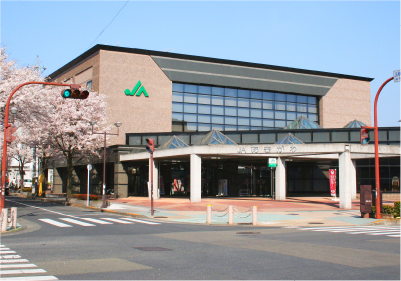
秋川農業協同組合
あきる野市／日の出町／檜原村
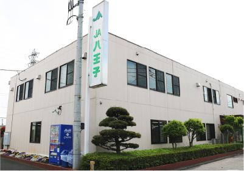
八王子市農業協同組合
八王子市
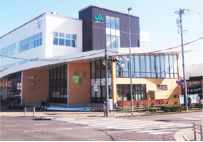
東京南農業協同組合
日野市／多摩市／稲城市
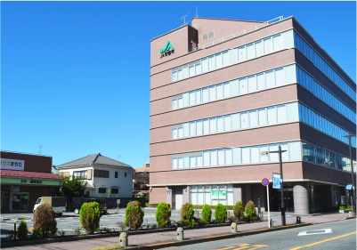
町田市農業協同組合
町田市／多摩市(一部)
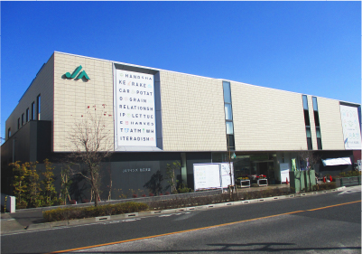
マインズ農業協同組合
府中市／調布市／狛江市
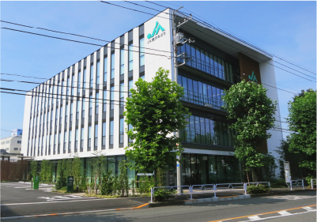
東京みどり農業協同組合
国立市／昭島市／立川市／武蔵村山市／東大和市
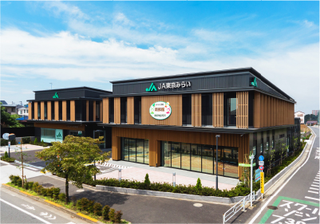
東京みらい農業協同組合
東村山市／清瀬市／東久留米市／西東京市
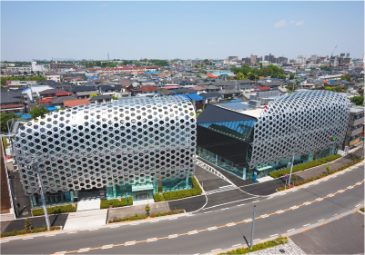
東京むさし農業協同組合
三鷹市／小平市／国分寺市／小金井市／武蔵野市
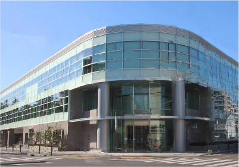
東京中央農業協同組合
大田区／品川区／世田谷区(一部)／目黒区(一部)／杉並区／中野区／新宿区
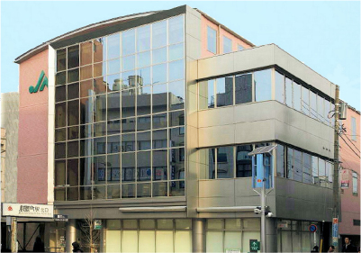
世田谷目黒農業協同組合
世田谷区(一部)／目黒区(一部)
東京あおば農業協同組合
板橋区／北区／豊島区／練馬区
東京スマイル農業協同組合
足立区／葛飾区／江戸川区／江東区（一部）
東京都信用農業協同組合連合会
都内JAの金融部門の本部機能
東京都農業協同組合中央会
東京グループの代表・総合調整・支援機能